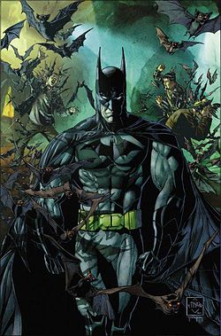

蝙蝠俠在一推出是一個極為受歡迎的角色，後來並有屬於自己的同名漫畫系列，《蝙蝠俠》（Batman）。隨著時間的演進，對蝙蝠俠這個角色的各種不同詮釋也紛紛出現。1960年代後期的蝙蝠俠電視影集採用了誇張滑稽的美學處理方式，結果在影集結束後的數十年間仍讓蝙蝠俠脫離不了影集中的形象。1986年法蘭克·米勒的短篇漫畫集《蝙蝠俠：黑暗騎士歸來》（Batman: The Dark Knight Returns）與1989年提姆·波頓的蝙蝠俠電影的成功，讓蝙蝠俠回到了他原本灰暗的基調。蝙蝠俠是一個文化符號，曾被改編呈現於數種媒體中，包括廣播、電視、電影；更出現在各式各樣的商品上行銷於全世界。